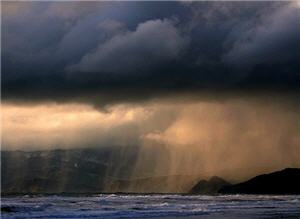
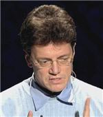

Salvando bosques tropicales, el corazón de la tierra y lluvia por bacterias
Esta es de las mejores charlas que este año, en TED 2009, se impartieron. No solamente por ser un tema ecológico o de rescate natural, sino por las implicaciones sociales y económicas de lo que presenta.
Con anterioridad he mencionado al impacto ambiental de la actividad humana, reflejada en cambios drásticos en lagos y ríos, y muy seguramente en el descongelamiento de los polos.
Proyecto Samboja Lestari
En estas, y en otras situaciones, se podría pensar que las tendencias son irreversibles, qué las demandas y la propia estructura de nuestro sistema económico junto con la inercia social nos llevan por un camino de devastación inexorable, sobre el cual no hay nada que pueda hacerse.
Lo más fascinante de la conferencia que están por ver es que demuestra que esa visión pesimista del párrafo anterior está equivocada. Si bien es cierto que existen tremendas fuerzas económicas, sociales, históricas, y puede que incluso evolutivas, que determinan el comportamiento colectivamente destructivo de la especia humana, hay esperanza. Es posible compaginar el crecimiento económico, el desarrollo social y la extracción de energía con el cuidado del medio ambiente, la reconstrucción de ecosistemas y la protección de la biodiversidad.
El planeta vivo
Hay un enfoque, seguramente familiar para muchos, llamada la Hipótesis de Gaia. Puede considerarse una forma de ver la vida en el planeta, un enfoque; o para otras personas representar una muy buena interpretación de cómo nos relacionamos los seres vivos.
En esta hipótesis, la Tierra es entendida como un sistema capaz de autorregularse, una entidad capaz de modificar condiciones e interacciones para mantener un equilibrio, un estado determinado dentro del sistema, casi como lo que hace un organismo vivo al regular su temperatura, estado químico. Una forma inexacta, pero esclarecedora, es decir que la Tierra es una entidad capaz de regular las condiciones en el planeta para que las condiciones óptimas para la vida permanezcan.
Menciono esta teoría (tiene sus detractores, sin duda) porque el impacto y las repercusiones de un acontecimiento (digamos, la aparición de la especie humana), tienen múltiples ramificaciones. Es decir que debemos considerar que al modificar equilibrios biológicos estamos desencadenando reacciones que tarde o temprano nos alcanzarán como especie.
Quiero mencionar dos hechos fascinantes que se han escuchado recientemente en el estudio del clima.
El corazón de la tierra
El primer hecho es una teoría que afirma que los bosques costeros sirven como bombas de viento, creando e impulsando corrientes de aire que arrastran la humedad de los mares hacia el interior de los continentes.
Esto crea, en la práctica, auténticas corrientes de agua evaporada a través del cielo, las cuales transportan enormes cantidades de agua de un lugar a otro, lo que me da la imagen de un corazón llevando oxígeno y nutrientes a todo el cuerpo.
¿Cómo ocurriría esto? Es conocido el ciclo hidrológico, que va desde la evaporación marina, formación de nubes, lluvia, filtración, etcétera. El punto interesante es, según los científicos rusos que proponen está teoría, que el agua ocupa menos espacio en estado líquido (al condensarse) que en estado gaseoso, lo que causa que descienda la presión. Al parecer, esto significa que la presión sería más baja en un bosque costero que en el mar, “succionando” así al aire, y este proceso se iría repitiendo tierra adentro, llevando al agua a sitios muy alejados del mar.
En palabras de los investigadores, hasta ahora sólo se había considerado como un factor importante en la formación del viento a la temperatura, no al cambio de presión por condensación de la humedad.
Esta teoría está lejos de tener amplia aceptación, el tiempo y subsecuentes estudios dirán si está en lo correcto. Los científicos que lo proponen son Victor Gorshkov y Anastassia Makarieva del Instituto de Física Nuclear de San Petersburgo, en Rusia. Pueden leer más sobre esto (en inglés) en el siguiente artículo, publicado el primero de abril de 2009 en el sitio web NewScientis: Rainforests may pump winds worldwide.
Bacterias que hacen llover
Cómo es posible que llueva es un tema muy estudiado ya que, por mucho que nos parezca obvio y natural que ocurra, la condensación del vapor de agua no ocurre tan fácilmente; se requiere un conjunto de condiciones especiales para que se condense el agua lo suficiente para que aparezcan las gotas de lluvia.
Hay varias teorías sobre como se forman las gotas de lluvia, siendo la más aceptada la de los cristales de hielo. Para entenderla, debemos saber que no es tan sencillo que el agua de una nube caiga a la superficie debido a la resistencia del aire. Se requiere todo un proceso en el que las gotas se van condensando y aumentando de tamaño, pero en esta teoría para que aparezca la lluvia se requiere de núcleos de hielo, los cuales se forman a temperaturas inferiores al punto de congelación. El problema con esta teoría, es que tal cosa solamente ocurre en climas templados y fríos. En esta página lo encontrarán explicado más ampliamente.
La parte que nos interesa aquí, es que al parecer la formación de la lluvia requiere de “núcleos” sólidos para formarse, tales como partículas de polvo, volcánicas, o como les comentaré, bacterias. Estos descubrimientos, reportados en 2008, nos dicen que las bacterias que viven en la superficie de plantas y árboles son arrastradas por el viento, y que durante buena parte del tiempo se la pasan en esas corrientes a gran altura.
Cuando se reúnen las condiciones adecuadas, estas bacterias funcionan como núcleos, facilitando la formación de cristales de hielo, haciendo así posible a la lluvia, y regresan a la tierra a reproducirse. Las bacterias usan la lluvia como parte de su ciclo vital.
Y más aún, según las investigaciones, estas bacterias se encuentran muy extendidas en la atmósfera, y representarían una parte crucial del ciclo hidrológico que lleva agua y mantiene vivo a buena parte del planeta. La idea no es nueva, ya tiene 25 años de que fue propuesta por David Sands, profesor de la Universidad de Montana en E.U.A., pero hasta fechas recientes la evidencia a su favor ha empezado a acumularse y la teoría ha comenzado a ser tomada seriamente por la comunidad científica. Si quieren leer más sobre esto pueden visitar este artículo-resumen (en inglés) escrito por el profesor David Sands, y también este artículo en Science Daily: Evidence Of ‘Rain-making’ Bacteria Discovered In Atmosphere And Snow.
Estos dos hechos nos recuerdan la enorme complejidad e interdependencia de los fenómenos naturales, cuánto desconocemos aún, y también, en un sentido más pragmático, refuerzan la necesidad de preservar y proteger los ecosistemas del planeta, tal como veremos a continuación.
Salvando bosques tropicales
Esta charla es importante, porque habla de un caso real, de un esfuerzo de años que ha demostrado cómo se puede recuperar un entorno completo si se tiene un plan y una visión que beneficie a todos los involucrados.
No se trata de una simple charla ecológica, sino también tiene implicaciones sociales y sobre todo económicas; demostrando que, si las personas están conscientes de lo conveniente que es cuidar los recursos naturales, si se aplica la tecnología de manera correcta y se protege al medio ambiente, puedes cambiar, literalmente, al mundo.
El ponente
El Dr. Willie Smits es un ecólogo de bosques tropicales, quien ha jugado un papel fundamental en la conservación de los primates y de su hábitat durante más de 20 años. Ha dirigido investigaciones en ecosistemas forestales y entrenado a más de 1000 investigadores y habitantes en la preservación y administración de bosques en Indonesia.
En 1985 fundó el centro de investigación Wanariset, desarrollando técnicas innovadoras de reforestación, que fueron más tarde convertidas en ley en Indonesia. En 1991 formó el Centro de Reintroducción de orangutanes, destinado a transportar y reintroducir a orangutanes confiscados del tráfico ilegal. El proyecto Samboja Lestari, del cual habla en la charla TED, lo inició en 2002 en una zona devastada ecológicamente.
Orangutanes
Bebe orangután
No se haría justicia al Dr. Smits si no mencionara su gran amor por los orangutanes, criaturas con las que ha convivido y a las que ha llegado a conocer y apreciar en tal medida que son la gran motivación para el logro extraordinario que verán en la conferencia. Es co-autor de un libro sobre ellos: Thinkers of the Jungle. En una entrevista habla así de los orangutanes:
Entienden todo lo que les dices, e incluso algunos hablan un poquito, y si les enseñas el idioma de los sordomudos conversan contigo.[...] ellos no son diferentes de nosotros, pueden comprender lo que pensamos y nuestros sentimientos [...] Son más empáticos y altruistas que los hombres, y nada agresivos. Pero hay que observarlos en su hábitat. Nosotros por primera vez hemos documentado que los orangutanes pescan: se fabrican una caña y pescan.[...] y también se pintan los labios con barro, se adornan con hojas y flores y luego se miran y se retocan cuando ven su reflejo.[..]
Willie Smits: Salvemos los bosques tropicales
[Duración: 20 minutos]
Como dice al final: “Espero que si quieren saber más, lean más”. Les dejo unas referencias adicionales.
Geo: El milagro sostenible de Samboja Lestari, de Willie Smits
Econoticias.com: Willie Smits: “Los orangutanes podrían extinguirse en cuarenta años”
Fundación para la Supervivencia del Orangután (en inglés): Create Rainforest
Descarga* este video en HQ (850×480): Parte 1.rar Parte 2.rar
Traducción y subtitulado: Ajmme Kajros
Reunir las 2 partes en la carpeta deseada y extraer con WinRAR.
Video: mp4, audio: AAC
Original en inglés sin subtítulos en TEDTalks: Willie Smits restores a rainforest.
*Archivo subtitulado y distribuido bajo los términos de uso de TED Conferences LLC.
Metadatos y acciones
 Temas: biologia, ciencia, clima, inspiracion, tedtalk, tierra, vida, video ⋅
Para guardar: Enlace permanente a esta anotación.
Temas: biologia, ciencia, clima, inspiracion, tedtalk, tierra, vida, video ⋅
Para guardar: Enlace permanente a esta anotación.
 Print This Post
Print This Post
Comentarios
Los comentarios están cerrados.
Categorías
Últimas 4 anotaciones
Últimas anotaciones en cada categoría

Divulgación
El dinero no fomenta la creatividad: Daniel Pink en TEDGlobal 2009

Inspiración
Los 30 no son los nuevos 20

Noticias
Ver tu mente en tiempo real: Christopher deCharms en TED 2008
![Música en la era digital [Animación]](../../../wp-content/themes/tma/images/featured/animation_04_2009_featured.jpg)
Ocio
Música en la era digital [Animación]
mayo 16, 2009, 9:30 pm
Información Bitacoras.com…
Valora en Bitacoras.com: Esta es de las mejores charlas que este año, en TED 2009, se impartieron. No solamente por ser un tema ecológico o de rescate natural, sino por las implicaciones sociales y económicas de lo que presenta. Con anterioridad he …
junio 5, 2009, 5:46 am
[...] Enlazo el video de la charla sobre el proyecto de rescate natural Samboja Lestari, en inglés subtitulado en castellano y el post de Ammnesis donde lo encontré: “Salvando bosques tropicales, el corazón de la tierra y lluvia por bacterias“ [...]
octubre 27, 2010, 11:24 am
Great post. Been trying to learn a new language on the net but not having a lot of success, considering going to a local course so this is helpful, thanks.